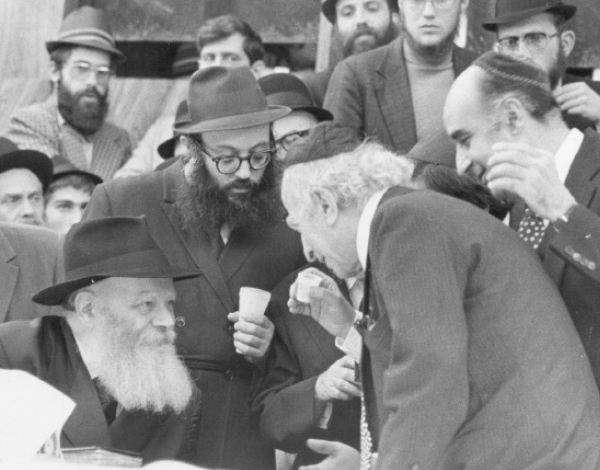

The Shepherd Never Deserts His Flock
A compilation of stories about the Rebbe that R’ Boruch Aharon Huss, of Anash of Montreal, wrote as he heard them from reliable sources, mostly from the protagonist himself.

TEMPEST IN A SODA BOTTLE
The following story was told by R’ Moshe Habosha of New York who drove a taxi. He would often drive someone by the name of Mr. Gold and one day he noticed that Mr. Gold was very sad. R’ Moshe asked him what was troubling him. Mr. Gold deflected his question saying, how can you help me anyway …
After being pressed and Mr. Gold realizing that R’ Moshe really sought to be of help, he told him that his son wanted to marry a gentile and he was very upset.
R’ Moshe said: There is a tzaddik who performs miracles, the Lubavitcher Rebbe. Why don’t you talk to him?
Mr. Gold accepted this advice and called the office. He asked for an immediate appointment since the matter was urgent; the wedding date was fast approaching.
The secretary arranged for an early appointment. When Mr. Gold entered the Rebbe’s room, he told the Rebbe about the impending calamity and the Rebbe said he wanted to meet his son.
Mr. Gold was sure that the Rebbe planned on dissuading his son from marrying the woman and he swiftly arranged an urgent appointment for yechidus together with his son.
To Mr. Gold’s great surprise, the Rebbe did not try anything of the kind. He only made a “strange request.” “If you are feeling warm, ask her (the fiancée) for a cup of water.”
The young man readily agreed to do this while his father was furious with R’ Moshe for referring him to the Rebbe. “I wasted my time on these two meetings. They were useless!”
R’ Moshe calmed replied, “Wait and see; it will all work out.”
About a week before the wedding there was a party that the engaged couple attended. During the party the groom felt warm and he remembered what the Rebbe had told him and asked his bride for a cup of water.
She opened a bottle of soda and it fizzed all over the place and since she wasn’t careful, it spritzed her in her face and got all over her. She was mad and began to scream at him, saying, “You dirty Jew …”
The young man, who had thought that a gentile’s hatred for Jews was something from the previous century and not for our modern day and age, was shocked to behold her spontaneous anti-Semitism and of course, the wedding was called off.
BREAKING THE ICE
I heard the following story from R’ Sholom Leib Eisenbach who heard it from the protagonist:
A bachur from a Chassidishe home went off the derech. His father, who went to the Rebbe, asked for a bracha for his son and the Rebbe said: I have already broken the ice in him.
The father was happy to hear these encouraging words and left the Rebbe’s room feeling hopeful.
A few days went by and he received a phone call from the mashgiach in the yeshiva in Kfar Chabad who told him that his son had come to him and pleaded, with tears, to be allowed back into the yeshiva. The boy was learning and davening like a baal t’shuva.
Afterward, the son said that while his father was in yechidus, he was somewhere (not a good place) when suddenly, the words from Tanya chapter 6 began to ring in his ears. They were words he had learned when he was younger, that someone who transgresses becomes a chariot for klipa.
The holy words of the Baal HaTanya kept reverberating in his mind and in his heart a war was waged between the Tanya and the pleasures of this world in which he was immersed. In the end, Tanya won and today he is a Chassidishe man with a fine Chassidishe family.
THE REBBE PROTECTED HIM IN THE HOSPITAL
I heard the following story from Vizhnitzer Chassidim as they heard it from their Rebbe, the Admur, R’ Yisroel.
The Admur once went to visit a Jew in Los Angeles who was not a Lubavitcher and mentioned that he was planning on visiting the Lubavitcher Rebbe. The man asked him: Aren’t you afraid to appear before the Rebbe? When the Rebbe looks at you, he knows everything about you!
The Admur asked: How do you know that?
The man said that he once had heart trouble and he had to be in the hospital. Although he was not a Lubavitcher Chassid, he knew the Rebbe’s address and he wrote him a letter asking for a bracha.
While in the hospital he was overcome by temptation and he made up with a gentile nurse to elope with her on Shabbos. Erev Shabbos, while he was still resting in bed, the nurse came in and woke him up in a fright. When he asked why she was waking him up she said that a rabbi from New York had called and insisted it was an emergency and he could not leave a message.
He went to the phone and it was R’ Chadakov on the line who said: The Rebbe said you should go home immediately, before Shabbos.
The man, who had other plans, began arguing with R’ Chadakov, giving him all sorts of excuses. R’ Chadakov said: Don’t play with fire. When the Rebbe says something, you need to obey!
The man tried another angle: It’s almost Shabbos. If I leave now I might get home after Shabbos begins …
He suddenly heard the Rebbe pick up the phone in his office and say to R’ Chadakov: Tell him it’s my responsibility; he should go and not delay.
When he realized that the Rebbe knew exactly what he planned to do, he gave up and went home. On the way, he caught himself, like someone waking up from a bad dream, and he began to cry and do t’shuva.
This is the story the Vizhnitzer Rebbe heard.
ANSWERS TO QUESTIONS THAT WERE THOUGHT
I heard from R’ Yosef Shimon Berezki, a Breslover Chassid who lives in Montreal:
When his wife gave birth to one of their children, she was in great danger and was miraculously saved. When she was pregnant again he mentioned her name to the Rebbe.
The Rebbe treated them unusually warmly and asked to be informed when she went to the hospital, and after she had given birth. They were most surprised by the Rebbe’s involvement.
While they were in the hospital a nurse asked him whether there are prophets nowadays. R’ Yosef Shimon wondered why she was asking and she immediately explained. She was in the process of doing t’shuva and since she had begun keeping Shabbos she wondered whether she should leave her job at the hospital since it entailed Shabbos desecration.
She wanted to ask the Rebbe and although she had other questions, she decided to ask just this one question about Shabbos. Based on the answer she would receive she would decide whether to ask the rest of her questions.
Within a short time she received a detailed answer from the Rebbe which said that since it was a Jewish hospital, according to halacha she was allowed to do any melacha for Jews that had a medical purpose and she should just be careful not to do unnecessary melacha. The Rebbe also wrote that if she could find another nurse to take her place and she could find another job, she could consider that. In general, since she was in the process of t’shuva, she needed to be careful not to take drastic steps because this could be harmful.
She liked the Rebbe’s detailed response but was absolutely flabbergasted when she saw, after this answer, some additional paragraphs with detailed answers to the questions she had thought of asking but did not ask!
PROPHETIC DREAM
Another heavenly story that I heard from R’ Yosef Shimon Berezki:
One of his sons was already older and not married. One night he dreamed that he had yechidus with the Rebbe: he, his wife, and the bachur, and the Rebbe blessed him and his wife.
When he woke up he could not remember what the Rebbe said in the dream. He only remembered that the Rebbe said to the bachur, “You will be a chassan within five weeks.”
That morning, even though there was nothing new on the shidduch horizon, he said to his wife, “Mazal tov! In another five weeks our son will be a chassan.”
And that is what happened, five weeks later he became engaged. The dream was on 6 Teves 5771 and on 15 Shevat the bachur became a chassan.
REACHING OUT TO ALL JEWS
I heard the following story from R’ Yosef Minkowitz:
When R’ Yosef was a student in 770 a crazy person hung around there who said he was Moshiach. The man was not religious but he decided he was Moshiach and he wrote an entire booklet about this with proofs. Of course, the bachurim had a good time with him …
Then the man wanted yechidus. He arranged an appointment and after waiting three months he told the Rebbe his fantasies. The Rebbe looked at his booklet and said: When the Rambam enumerates the signs for Moshiach he writes: “Toils in Torah and is involved in mitzvos” – so you should start putting on t’fillin. Another sign in the Rambam is “and he will compel all Jews to follow it [the Torah] and strengthen its breaches” – so you should convince your neighbors and friends to do so.
The man left the Rebbe happily and said: I was by the Rebbe and he agrees with me. From that point on he put on t’fillin every day.
HE IS WITH US
The following story happened to me:
A few years ago I was in a bad accident when my car collided with a bus. I lost consciousness and when I awoke I was in the hospital and had no recollection of what had occurred and how I had gotten to the hospital. I was disoriented and I was very afraid that this sensation would not go away.
When my son came to my hospital room I asked him to look for my glasses and yarmulke that flew off in the accident. He looked in the bag they brought with me to the hospital and found a photocopy of a letter from the Rebbe from the Igros Kodesh volume 4, letter #955.
The letter said that everything Hashem does is for the good and everyone can understand this rationally since Hashem is the essence of goodness and only He can do everything and He loves every Jew etc. It’s just that we need to bring this down from our intellects to our emotions and feel that everything is good and then we will be shown the good openly. It is hard, but it is easier for someone who grew up among Chassidim or someone who married with Chassidim and set up his home in the ways of Chassidus.
When I read the letter, this strengthened me very much and I literally saw it as a revelation of G-dliness. Boruch Hashem, I miraculously emerged from the accident without any harm done. At the time I could not recall how I happened to have the letter in my pocket. It was only later on that I remembered that I had once seen it in shul on the table and I put it in my pocket. I had not looked at it again until the right time came.
THE CURE BEFORE THE BLOW
I heard the following story from both R’ Meshulam Tzvi Jacobowitz and R’ Binyamin Klein:
R’ Shlomo Zalman Katz, rav of the Toldos Aharon beis midrash in Williamsburg, the son-in-law of the previous Toldos Aharon Rebbe, would often write to the Rebbe. One time he wrote but did not receive a response. He figured it was just one of those times that the Rebbe did not respond as it was known that the Rebbe did not always respond.
Thirty years went by, with Gimmel Tammuz in between, and the Rebbe’s secretary, R’ Binyamin Klein, found a letter in the Rebbe’s office that the Rebbe had written to R’ Katz. R’ Klein contacted his friend, R’ Meshulam Tzvi Jacobowitz who lives in Williamsburg next to R’ Katz’s home, and asked him to deliver the letter.
R’ Meshulam took the letter and called R’ Katz but he wasn’t home and the letter remained with R’ Meshulam. Two months later, R’ Klein asked him whether he had delivered the letter and he said he hadn’t, because he wasn’t home.
R’ Klein asked him to at least call R’ Katz in Eretz Yisroel and convey to him the contents of the letter.
R’ Meshulam found out where he could reach R’ Katz, and in the meantime he found out that R’ Katz had just had a heart attack in Eretz Yisroel. He called him and told him what the letter said. It was a seemingly typical letter but at the end, the Rebbe blessed him with a complete recovery and included seven dollars for tz’daka.
The interesting thing is that when the Rebbe wrote the letter, R’ Katz was healthy and had only two children, but by the time he heard about the letter he needed a bracha for a refua shleima and he had seven children.
REACHING ACROSS TIME
I heard the following story from the shliach in Cape Coral in Florida, R’ Y.Y. Labkowski:
A world famous cardiologist once called him and said he had s’farim he did not need which he wanted to donate to the Chabad house. When they met the doctor said that he had some connection to Chabad and he had once received a dollar from the Rebbe and the Rebbe told him that he would become famous. This came true but he was upset since he lost the dollar.
As they spoke, the shliach looked through one of the s’farim the man had brought him and found the dollar from the Rebbe in it. The doctor began to cry, he was so overcome, and he said that he felt the Rebbe had just sent him a message.
The shliach took the opportunity and asked him to put on t’fillin which he agreed to do. From then on, he began putting on t’fillin and attending shiurim.
Beis Moshiach (staff). "The Shepherd Never Deserts His Flock." Beis Moshiach, no. 930 (June 17, 2014).